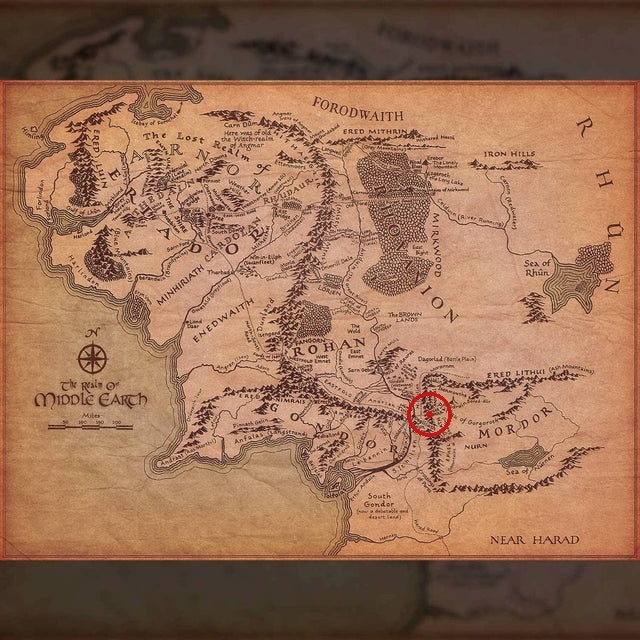

Minas Ithil: la ciudad de la luna
Fundada como bastión de Gondor, Minas Ithil fue una ciudad de jardines, fuentes y torres que reflejaban la luna. Sus paseos evocan la piedra blanca, el río Ithilduin y las celebraciones nocturnas.
Información turística de la ciudad.
Entre las laderas del Ephel Dúath se encuentra Minas Ithil, la Ciudadela de la Luna: una ciudad de muros de mármol blanco, jardines nocturnos y miradores que brillan bajo la luz de la luna.
En el fondo del valle, bajo las Montañas de la Sombra, se alza Minas Morgul, la Torre de la Hechicería: un paisaje de nieblas, piedra oscura y resplandores pálidos que se recorre con respeto y guía.
Este portal invita a conocer la ciudad mediante recorridos, relatos y experiencias para visitantes curiosos.

Minas Ithil se ubica en el extremo este de Gondor, sobre la frontera con Mordor, al pie de las Montañas de la Sombra. El mapa permite ubicar la ciudad dentro del recorrido general de la Tierra Media.
Minas Morgul se ubica en el extremo este de Gondor, sobre la frontera con Mordor, al pie de las Montañas de la Sombra. El mapa permite ubicar la ciudad dentro del recorrido general de la Tierra Media.

Fundada como bastión de Gondor, Minas Ithil fue una ciudad de jardines, fuentes y torres que reflejaban la luna. Sus paseos evocan la piedra blanca, el río Ithilduin y las celebraciones nocturnas.
Tras la llegada de los Nazgûl, la antigua fortaleza se transformó en Minas Morgul. Hoy sus ruinas, nieblas y resplandores verdosos dan forma a un paisaje de leyenda que se recorre con respeto y guía.
Prepare su visita con una selección de los atractivos más representativos de Minas Ithil.
Prepare su visita con una selección de los atractivos más representativos de Minas Morgul.
El punto más alto de la ciudadela reúne vistas del valle, salas astronómicas y jardines.
El primer Árbol Blanco de Gondor creció en la explanada, sembrado por Isildur con un fruto de Nimloth.
El anillo de mármol blanco que ciñe la ciudadela y su puerta de acceso desde el valle.
Terrazas ajardinadas con fuentes y miradores sobre el valle de Ithilien.
El recinto amurallado que ciñe la ciudadela, entre la niebla y el resplandor verdoso del valle.
Praderas de flores pálidas que resplandecen en la noche del valle.
La torre más alta de Minas Morgul y su luz pálida girando sobre el valle.
El acceso tallado como una boca abierta, al final del camino de Morgul.
Para horarios, recomendaciones y acompañamiento de guías, visite la Oficina de Turismo.